OUM |
Testing and Quality Management Tools Supplemental Guide |
||
Method Navigation |
Current Page Navigation |
||
|
|
||||||||
This document contains OUM supplemental task guidance for Testing and Quality Management Tools.
The task guidelines in this document should be used to supplement the guidelines that appear in the OUM Task Overview.
Oracle Testing and Quality Management Tools - OUM Supplemental Task Guidelines (this document) collapse table | expand table |
OUM Task Overview |
|---|---|
Testing |
|
| TE.025.1 Create System Test Scenarios | TE.025.1 Create System Test Scenarios |
| TE.020.2 Develop Unit Test Scripts | TE.020.2 Develop Unit Test Scripts |
| TE.025.2 Create System Test Scenarios | TE.025.2 Create System Test Scenarios |
Performance Management |
|
| PT.050 Design Performance Test Scripts and Programs | PT.050 Design Performance Test Scripts and Programs |
| PT.070 Build Performance Test Scripts and Programs | PT.070 Build Performance Test Scripts and Programs |
| PT.080 Conduct Performance Test Dress Rehearsal | PT.080 Conduct Performance Test Dress Rehearsal |
The task of defining test plans, acceptance criteria, testing deliverables and processes for any software development effort may present many different and evolving challenges, from identifying applicable processes to maintaining those decisions over time. Using a tool to centralize that information is highly recommended. Oracle offers OTM (Oracle Test Management) as a centralized solution for your test requirements, deliverables and issue tracking.
By coordinating the testing process in a single, unified platform, Oracle® Test Manager for Web Applications provides a comprehensive way to manage quality as a process throughout the Web application development lifecycle. Oracle Test Manager for Web Applications is tightly integrated with Oracle Functional Testing for Web Applications and Oracle Load Testing for Web Applications, maximizing the return on investment for your testing tools. It supports a process that consistently delivers high-quality, high-performance applications.
OTM can be used as a tracking tool and can also be used to execute automated and manual tests. OTM also has the option to schedule automated tests which makes this repetitive task more reliable.
The de facto unit-testing framework for Java is JUnit (open source). You can plug JUnit easily into Oracle® JDeveloper from the menu: Help -> Check for Updates -> check the JUnit Extension -> next.
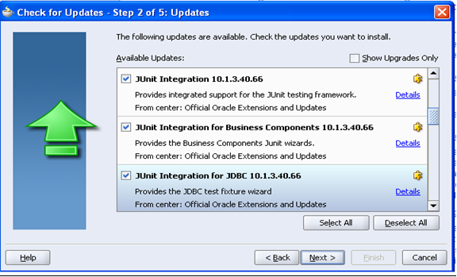
This will automatically download the JUnit plug-in files to your JDeveloper directory. JUnit can be used together with JDeveloper to test Java classes that run in a client JVM (Java Virtual Machine). Using the plug-in you can easily create unit test stubs for existing methods and create test suites for a set of existing unit tests. You can also create a set of reusable test fixtures.
Select the project or the particular case to be tested, -> New to Open the New Gallery, in the categories tree, expand the General tab and select Unit Tests -> Test Case
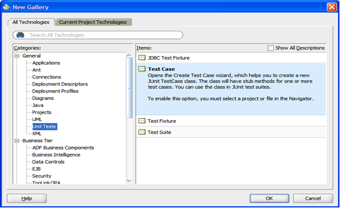
Select the method to be tested form the wizard:
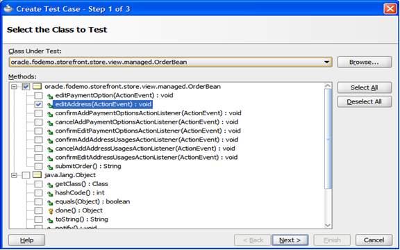
Click next then the class and Finish. Once that is done the new class will be added to the application navigator.
Open the new test case (The Java Class that has just been created) and include the values that check the function of the code.
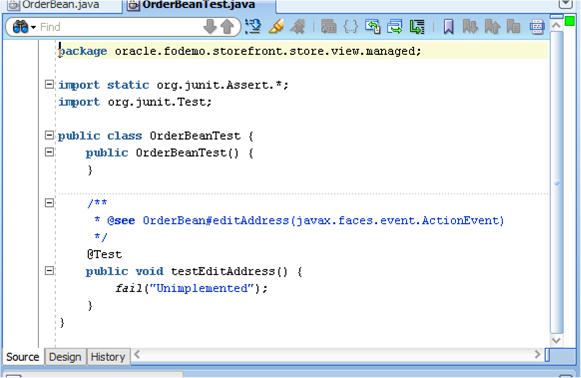
After running the program and checking that it does not display any errors, we can run the JUnit tests. Right click on the test case and click on Run:
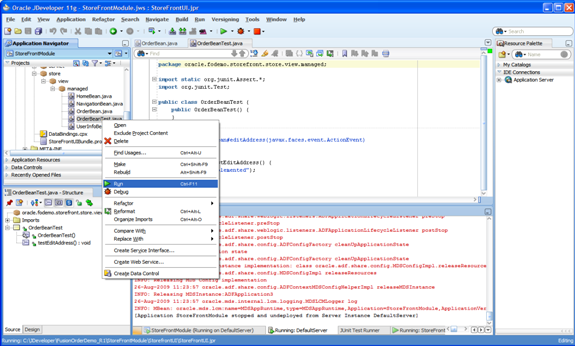
JDeveloper will show the progress of the tests in the results window:
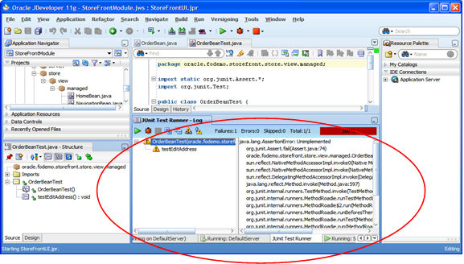
Test Fixtures are used to create a fixed estate of a set of objects, the purpose of a test Fixture it to create a known environment where tests and results can be repeated.
Examples are:
Select the project or the particular case to be tested, -> New to Open the New Gallery, in the categories tree, expand the General tab and select Unit Tests -> Test Fixture, name the test and click OK.
When multiple tests need to be executed a Test Suite needs to be created, The JUnit Test Wizard has options to insert a main() method and call the TestRunner class which will open the test TestRunner log and display the test results.
Select the project or the particular case to be tested, -> New to Open the New Gallery, in the categories tree, expand the General tab and select Unit Tests -> Test Suite name the test and click OK.
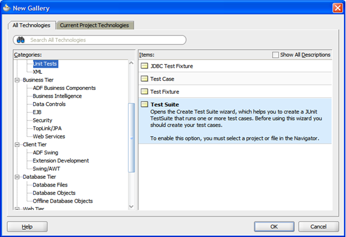
Name the test set and select the classes that will be used during the test.
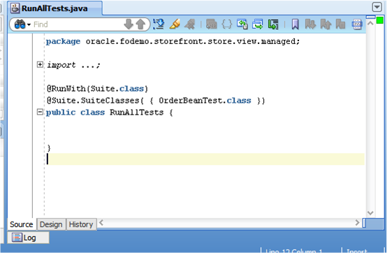
Right click the class and select Run to run the test, the results will displayed in the results pane of JDeveloper.
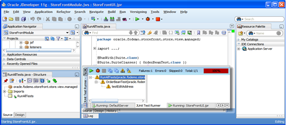
OpenScript functional module is used to create functional tests scripts, using the functional module OpenScripts scripts will replay and validate user interactions with the application trough the browser, by clicking on links, buttons and validating content as well as application functionality.
OpenScript is the next generation scripting platform for Oracle Application Testing Suite, which can create automated test scripts for load testing and functional testing.
Combines an intuitive graphical scripting interface with a powerful Java IDE (Integrated Development Environment) to create test scripts, providing much greater scripting flexibility while maintaining ease-of-use.
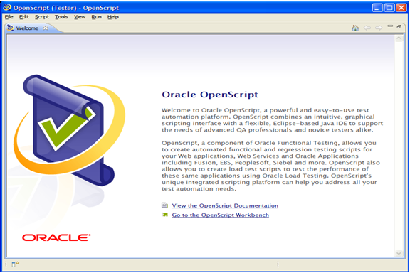
To create a functional test script select: File -> New and Web under Functional Tests
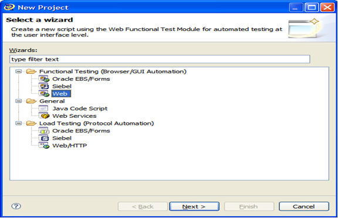
Select workspace and name the script.
Start recording by clicking the record button.
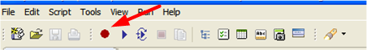
A browser will open, while interacting with the browser OpenScript will record the actions that are being performed.
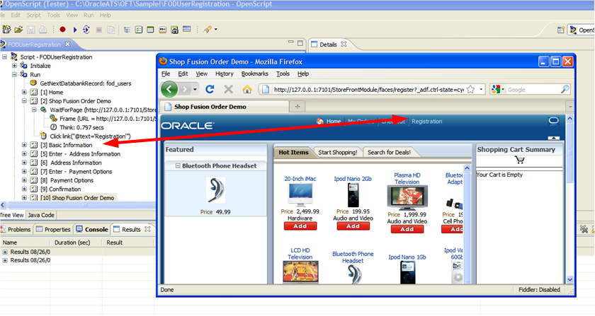
Once the script has been recorded, you will need to play it back. Click the playback button to execute the script.
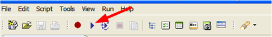
Again the browser of your choice will open and the steps that you executed during recording will be reproduced.
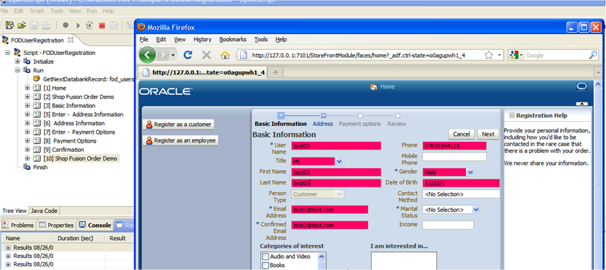
Once the steps have been reproduced a report will be generated to show the results.
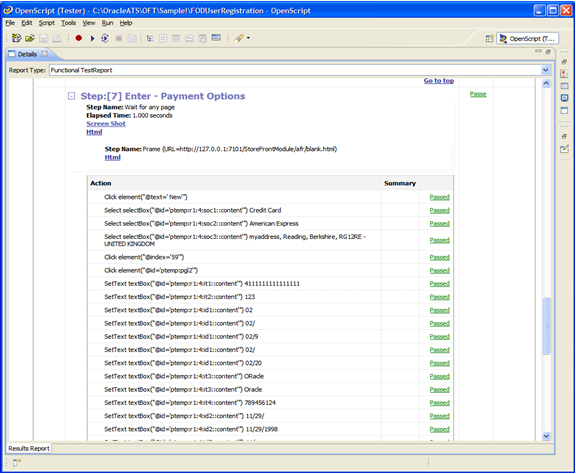
Oracle® Load Testing allows you to easily test the performance and scalability of your Web applications and Web services. Oracle Load not only stresses your application to simulate the impact of end-user workloads, but also enables rigorous validation. The integrated scripting platform cuts scripting time in half, eliminating weeks from a project’s testing schedule. Oracle Load Testing is a component of Oracle Application Testing Suite, the centerpiece of the Oracle Enterprise Manager solution for comprehensive testing of packaged, Web and service-oriented architecture–based applications.
It is composed of two components:
OpenScript HTTP module is used to record the HTTP traffic that a user is generating while interacting with a browser or another application that generates HTTP calls. Its function is to record that traffic and interpret it, so it can be reproduced exactly as if it was being done by a user. You will then use OpenScript to validate and add validations to the script.
OpenScript can also be used to test other non HTTP protocols, such as an Oracle Database, SSH, and Telnet.
To do so OpenScript offers a basic module that can be expanded using Java, the code can be integrated with OpenScript methods to validate and report errors.
This script can later be called from OLT (Oracle Load Test) to generate load.
OpenScript can also be used to create scripts for WebServices, it does so by reproducing SOAP (Simple Object Access Protocol) calls. The scripts can then be edited, parameterized and validated.
We will use OpenScript to create these scripts; first we will select the Web/HTTP module to generate the script.
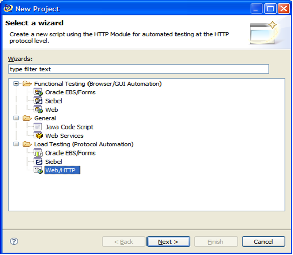
Select next, enter a name and select the workspace where you want to store it. You will start recoding by clicking on the record button:
After clicking on the icon your preferred browser will open, interact with the browser to record the HTTP transactions.
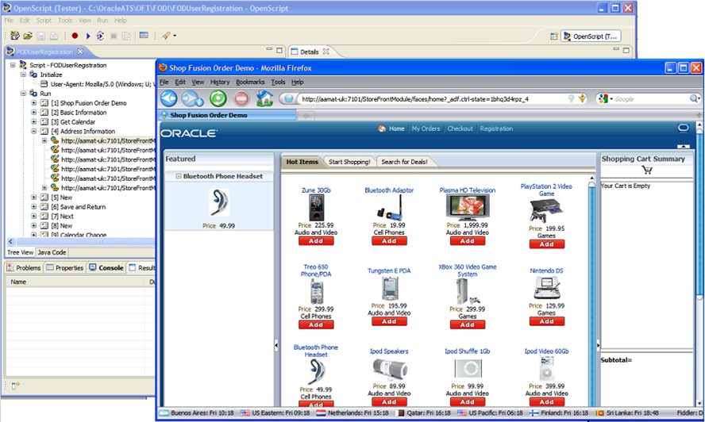
Use OpenScript to correlate and validate your scripts.
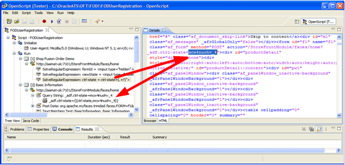
The above picture shows a parameter being substituted using correlation.
To play back the scripts in OpenScript use the Playback button.
As the script plays back, the Details pane will display the contents received by the server. It will also report any HTTP errors and perform any user defined validations.
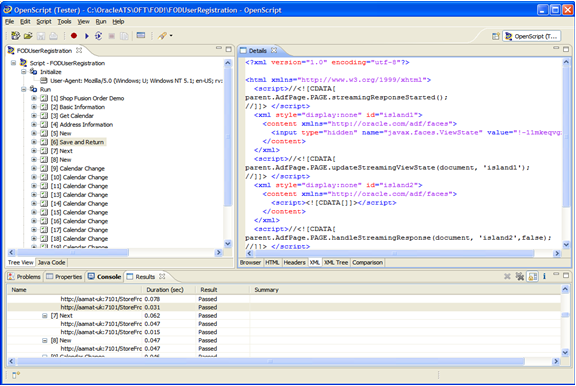
Once scripts have been validated and verified that it is time to start generating load for the performance test, you will do so using OLT.
First you will select the desired scripts from OLT and build the scenario. Once you have defined the scenario you will add them to the autopilot.
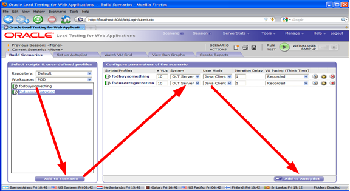
Once you have added the scenario to the autopilot, you can define how you would like to start and end the test, and user ramp up. You can also indicate if you would like to add any system metrics.
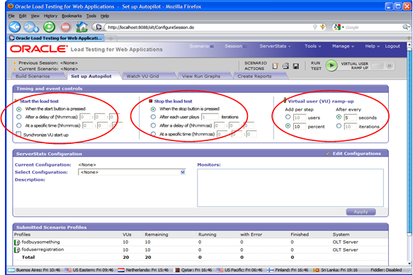
Click on the play button and name the session to start the test. As the test is running, you can see the VU (Virtual User) grid being updated.
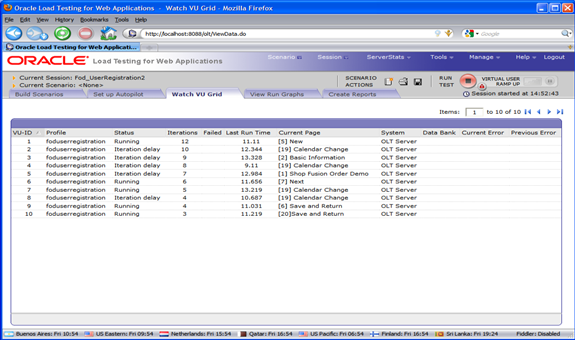
The Run graphs can also be used to show the status of the application.
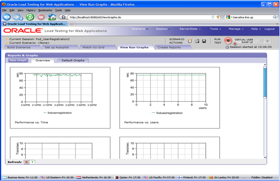
Finally use the reports tabs to view any metrics and build custom reports.
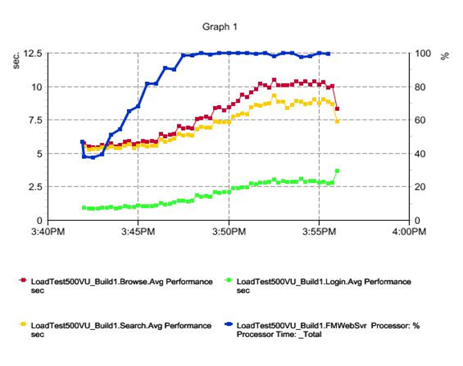

Copyright © 2006, 2016, Oracle and/or its affiliates. All rights reserved.